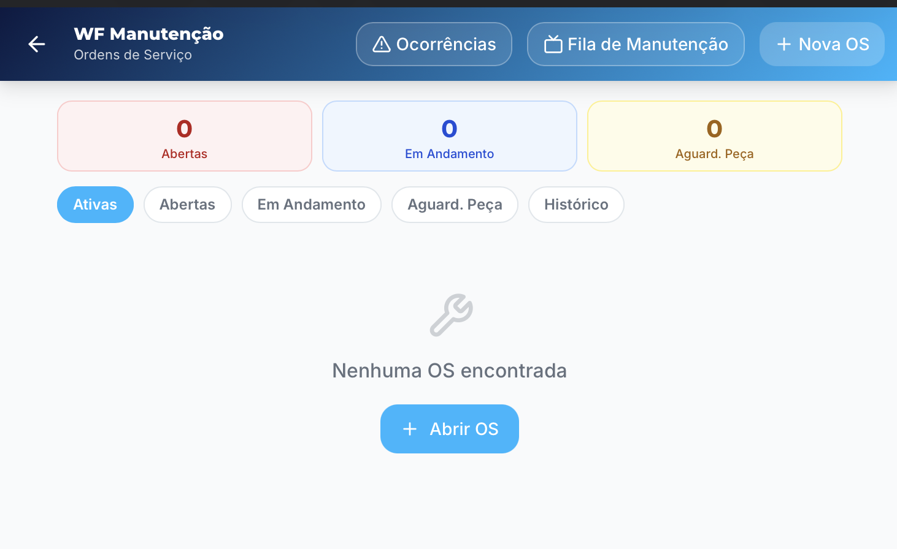
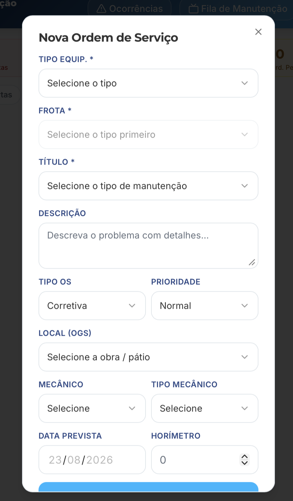
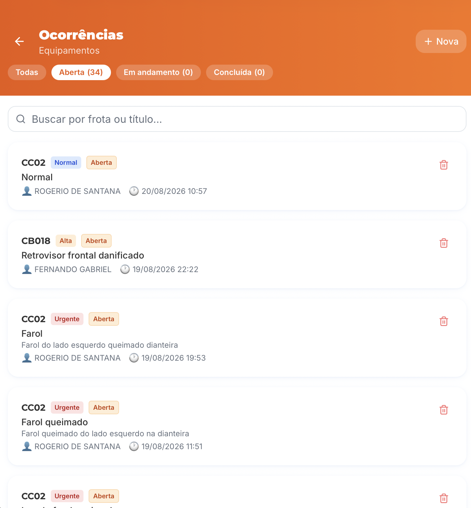
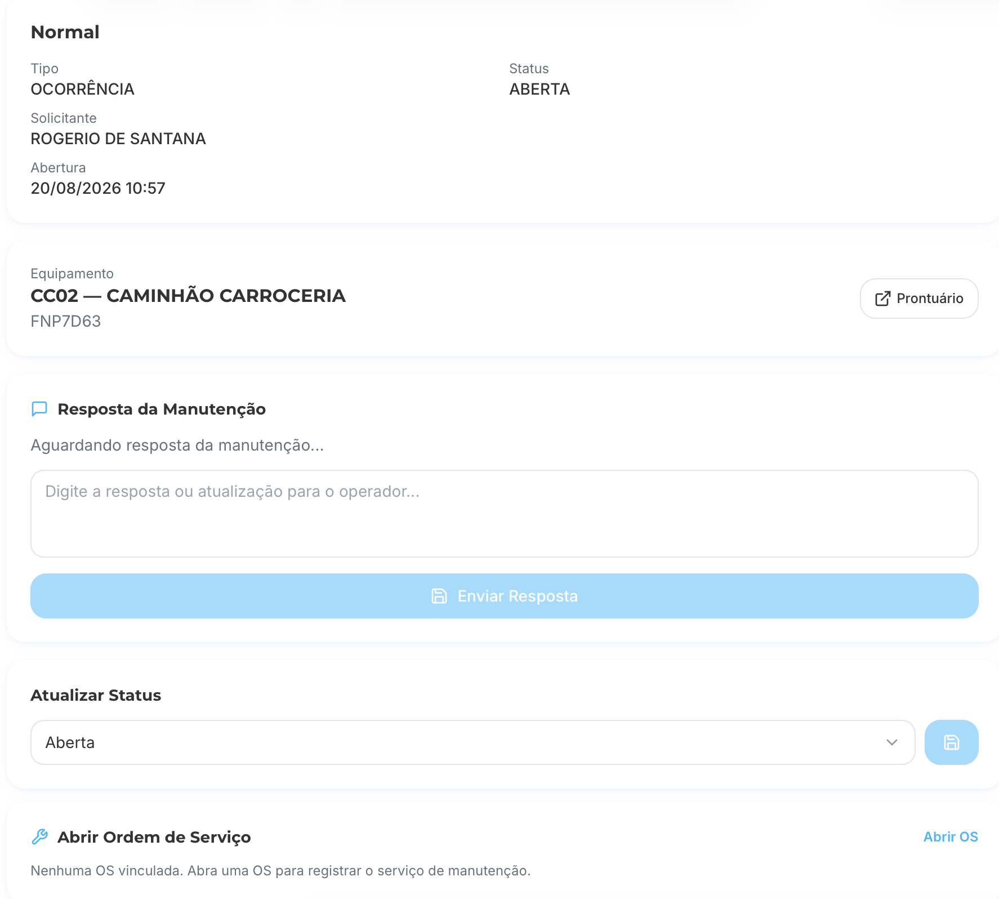
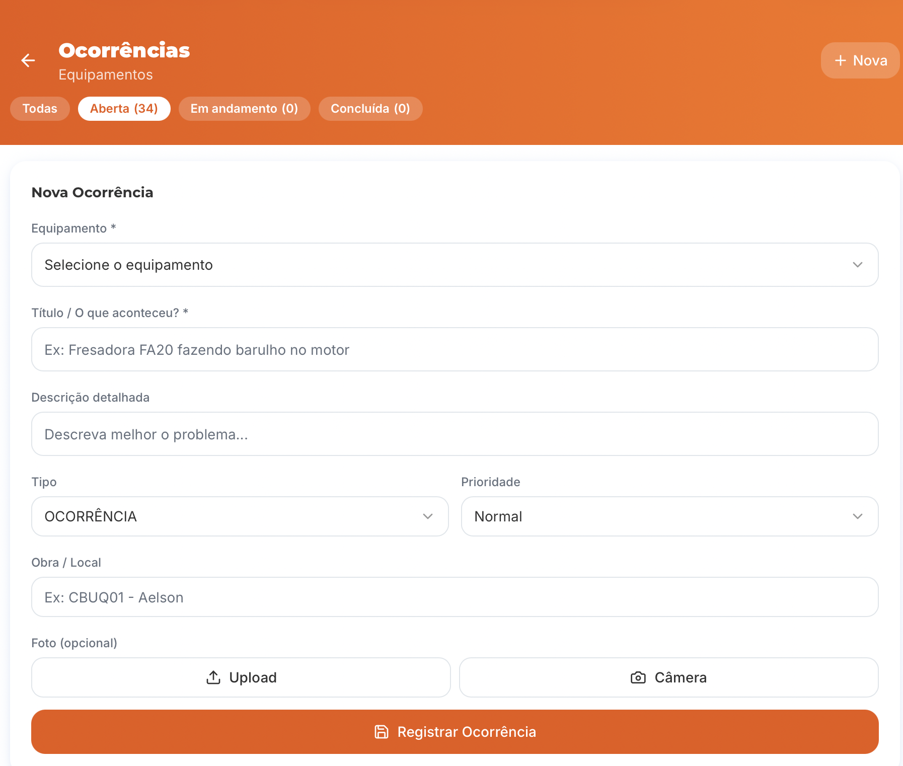
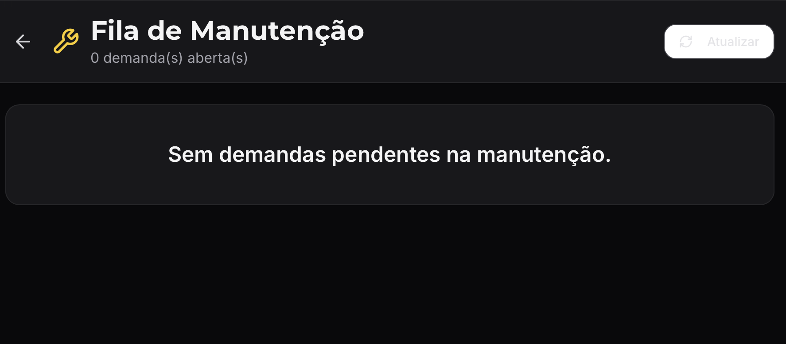

1) Escopo da apresentação
Usuário operacional Coordenação / gestãoEste tutorial cobre o fluxo de manutenção de ponta a ponta: abrir demanda, transformar em OS, executar e acompanhar pendências.
Importante: as ocorrências são abertas na ponta por operadores, motoristas, encarregados e engenheiros. A manutenção recebe, prioriza e trata essas solicitações.
2) Home Manutenção (entrada do módulo)

Leitura rápida da tela
Uso principal- Cards de status: Abertas, Em andamento e Aguardando peça.
- Filtros por situação: Ativas, Abertas, Em andamento e Histórico.
- Ações no topo: Ocorrências, Fila de Manutenção e Nova OS.
Quando não houver OS, o botão “Abrir OS” vira o atalho da operação.
3) Modal “Nova Ordem de Serviço”

Campos obrigatórios e sequência
Fluxo padrão- Selecionar Tipo Equip. → Frota.
- Preencher Título e Descrição clara do problema.
- Definir Tipo OS e Prioridade.
- Informar Local (OGS), Mecânico e Data prevista.
- Prioridade correta evita fila desordenada e atraso em urgências.
4) Ocorrências (lista operacional)

Como priorizar
Uso diário Origem: campo- As ocorrências são registradas por operadores, motoristas, encarregados e engenheiros.
- Filtrar por status (Aberta / Em andamento / Concluída).
- Usar busca por frota ou título.
- Atacar primeiro badges de prioridade Alta/Urgente.
- Abrir o card para responder e/ou vincular OS.
5) Ocorrência (detalhe e tratativa)

Ações da manutenção
Execução- Responder operador no bloco “Resposta da Manutenção”.
- Atualizar status para refletir andamento real.
- Abrir OS quando o serviço exigir rastreio formal.
- Consultar prontuário do equipamento quando necessário.
6) Nova Ocorrência (abertura em campo)

Boas práticas de registro
Qualidade do dado- Esta abertura é feita por operadores, motoristas, encarregados e engenheiros em campo.
- Equipamento correto e título objetivo do defeito.
- Descrição curta, mas acionável para o mecânico.
- Definir prioridade real (Normal, Alta, Urgente).
- Anexar foto sempre que houver evidência visual.
7) Fila de Manutenção (TV/equipe)

Leitura operacional
Painel de execução- Mostra total de demandas abertas em tempo real.
- Quando zerada, indica operação sem pendências na manutenção.
- Botão Atualizar para sincronizar acompanhamento em reunião.
Ideal para monitoramento contínuo da equipe.
8) Checklist de uso diário (rápido)
- Abrir WF Manutenção e revisar cards de status.
- Conferir Ocorrências abertas e priorizar Urgentes/Altas.
- Abrir/atualizar OS com serviço realizado e peças usadas.
- Atualizar resposta para o solicitante no detalhe da ocorrência.
- Checar Fila de Manutenção para garantir zero pendência crítica.